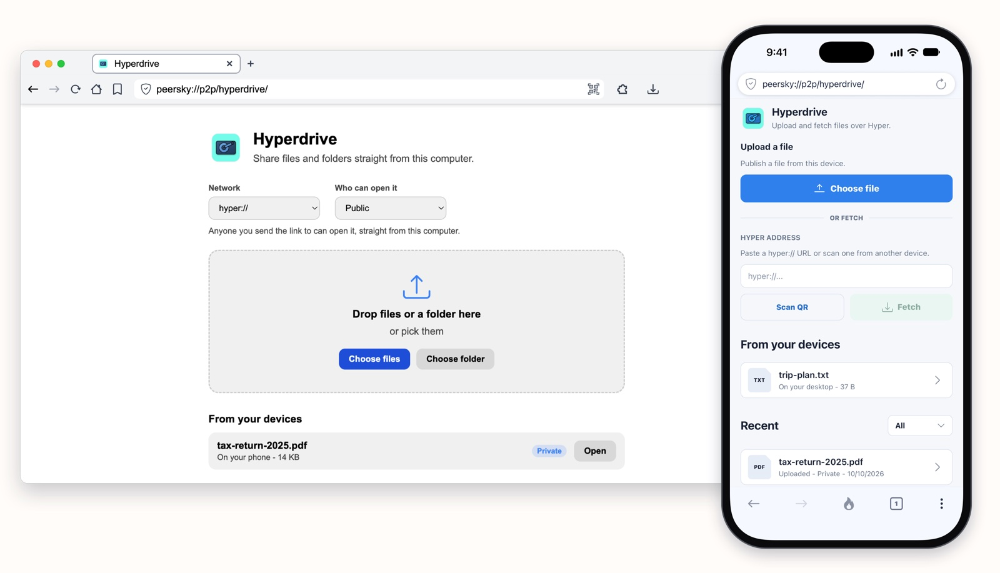

That old laptop in a drawer can be your own cloud. Link it to your phone with PeerSky once, and every file you save as Private shows up on it by itself and stays there, encrypted. Only your devices can open them. There's no account, no server and no monthly plan, and your devices' free space is the only limit.
If you've ever paid every month just to keep your own photos, or stopped before uploading a passport scan to someone else's computer, this is for you.
You need PeerSky on both devices. Get it for your computer and your phone at peersky.p2plabs.xyz.
1. Link your devices
On your phone, open Settings, then Link Device, then Sync with another device. It shows a code. On the spare laptop, open Backup & Restore, scan that code under Identity transfer and press Upload Hyper. Scan the code the laptop shows back with your phone. When both screens show the same six digits, tap It matches.

Now both devices hold the same key, and nobody else has it.
2. Save a file as Private
In Hyperdrive on your phone, tap Choose file and pick Private. The file is encrypted on your phone before it goes anywhere. There's no size limit: a two-page PDF or a whole movie, as long as your devices have room for it.

3. Find it on the laptop
There's no link to send yourself. By the time you've walked over to the laptop, the file is in Hyperdrive, under From your devices. The laptop's private files show up on the phone the same way.

How it works
Both hold the same key, from Link Device, and find each other with it. No server in between.
A cloud service keeps a list of your devices and passes your files between them. Here the key does that job. Each device makes the same meeting point from it and looks for the other there, over the internet or on your home Wi-Fi. When they connect, each proves it holds the key without ever sending it, and only then do they tell each other which private drives they keep. The laptop copies every file in the phone's drive, and each new one as it arrives. Someone without the key can't work out the meeting point, and anyone who reaches a device some other way isn't told which drives it keeps, because they can't prove the key.
On a cellular connection the phone says so, and the laptop waits for Wi-Fi before copying, so your data plan isn't spent on it. On the phone, Settings, then Link Device, lists the laptop as a desktop, with when it was last online.
For the technical details, read the docs on how your devices sync private files for desktop and mobile, on private drives for desktop and mobile, and on Link Device.
Someone who isn't linked
The link is still safe to share. Alice isn't linked to Sam's devices, so when she opens it, her PeerSky can't read any of it.

Leave it on
Keep the spare device on, with PeerSky open, and it works like your own cloud. Here's what each device keeps:
- From your phone to the laptop: the laptop copies every private file as soon as the two are online together, and on cellular it waits for Wi-Fi. From then on the file is on the laptop, even with the phone switched off. If the phone goes offline before the laptop ever saw a file, the laptop gets it when the phone comes back.
- From the laptop to your phone: the phone lists the laptop's files and fetches one when you open it, so the laptop has to be on then, whether you're at home or out. Files you've opened on the phone stay on it.
- Between two linked computers: each keeps a copy of the other's files, the same way the laptop does with your phone.

Any computer you can leave on will do, even the one with the sticky keys: an old laptop, a desktop or a Raspberry Pi. An old phone works too, plugged in with PeerSky open.
What people use it for
Papers you need anywhere
Tax returns, a lease, a passport scan. They stay on the laptop at home, and your phone opens them when you need them.
Photos off your phone
Save them as Private and they show up on the laptop, which keeps a copy, so they're there even when the phone isn't.
Big videos and archives
No size limit besides free space. Save a long video as Private on your phone, and once you're on Wi-Fi it's on the laptop, ready to play.
Home Wi-Fi, no internet
Your phone and laptop find each other on the same Wi-Fi, even with the internet down.
Give that old laptop a second life. Get PeerSky at peersky.p2plabs.xyz.